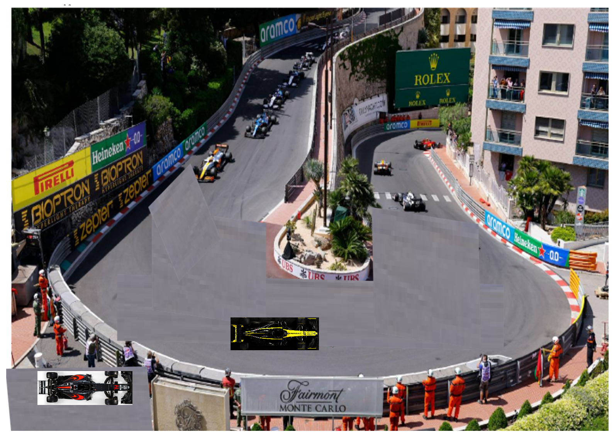
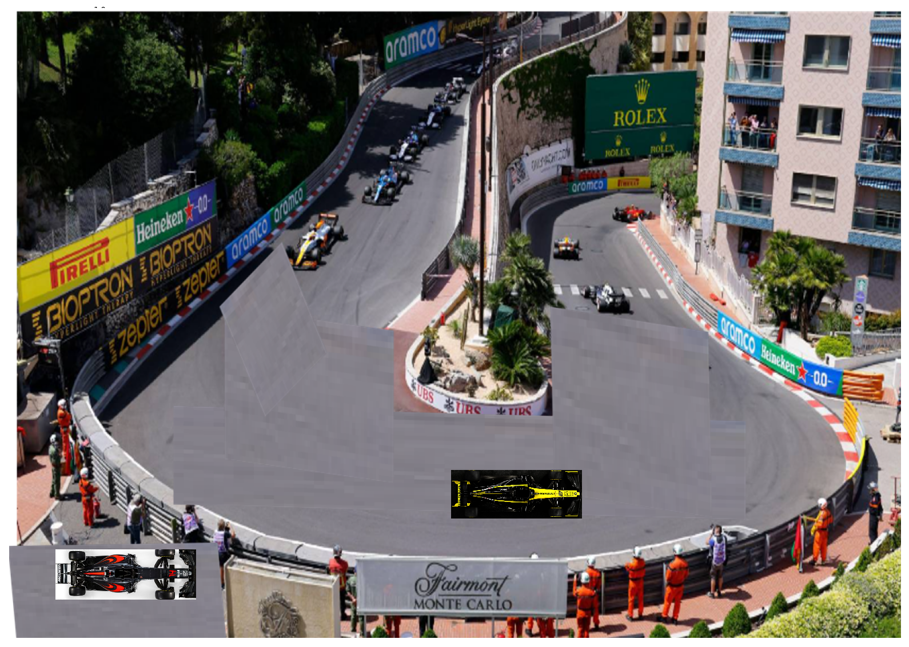
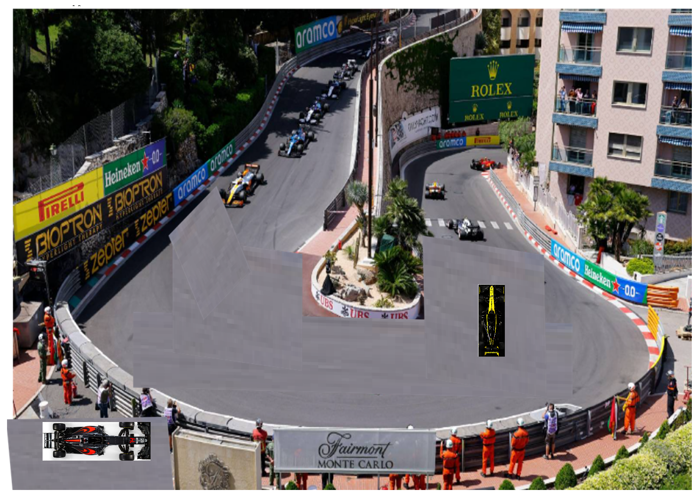
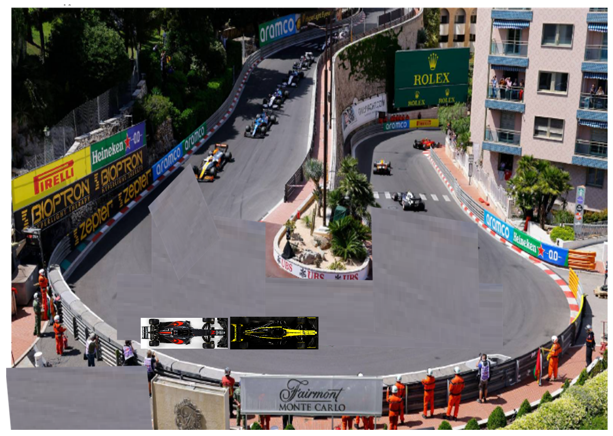
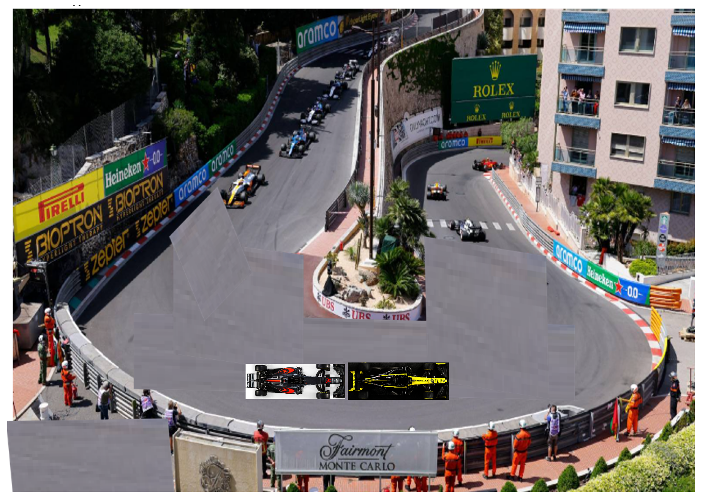
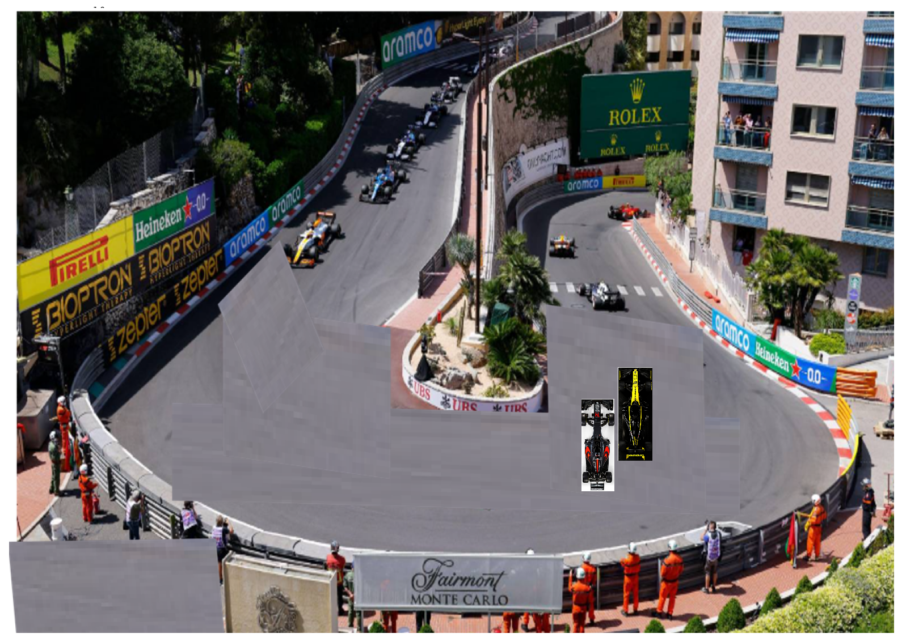

10. Simulating Formula One#
In this lab, we will use an object oriented approach to create a simple animation of cars at a drive-thru.
Import libraries
import matplotlib.pyplot as plt
import matplotlib.image as mpimg
from matplotlib.offsetbox import TextArea, DrawingArea, OffsetImage, AnnotationBbox
import numpy as np
import scipy.misc
from scipy import ndimage
from PIL import Image
Create a car class.
Each car has properties or attributes including:
- x position
- y position
- an image file showing what the car looks like
- a size (which can be adjusted)
- speed
Each car also has a method
- go
class car:
def __init__(self,x,y,image,size,speed): #properties
self.x=x #object's position is (x,y)
self.y=y
self.image=image #name of the image file
self.size=size
self.speed=speed
def go(self,xamount,yamount): #method to move the object vertically
self.x=self.x+xamount*self.speed
self.y = self.y+yamount*self.speed
return
c) We’ll create a function which positions both cars and then put the yellow car on the track.
#create a function to position the cars on the track
def simulate(c1,c2,n):
#make a graph
fig = plt.figure(figsize=(12,10))
plt.gca().set_aspect('equal')
ax = plt.axes([0.1, 0.1, 1, 1])
#add a track diagramimagebox = OffsetImage(simulation, zoom=1)
simulation = mpimg.imread('monaco.png')
imagebox = OffsetImage(simulation, zoom=1)
ab = AnnotationBbox(imagebox, (0.5, 0.45),frameon=False)
plt.gca().add_artist(ab)
car1 = mpimg.imread(c1.image)
imagebox= OffsetImage(car1, zoom=c1.size)
firstcar = AnnotationBbox(imagebox, (c1.x, c1.y),frameon=False)
plt.gca().add_artist(firstcar)
car2 = mpimg.imread(c2.image)
imagebox= OffsetImage(car2, zoom=c2.size)
secondorn = AnnotationBbox(imagebox, (c2.x, c2.y),frameon=False)
plt.gca().add_artist(secondorn)
plt.show()
return plt.savefig(str(n)+'.png')
#create car objects
c1=car(.43,.15,'car1.png',.14,0)
c2=car(.02,.01,'car2.png',.12,0)
simulate(c1,c2,0)

<Figure size 640x480 with 0 Axes>
We’ll use the go method to move the yellow car foreward.
c1.speed=.8
c1.go(.2,0)
simulate(c1,c2,1)

<Figure size 640x480 with 0 Axes>
We’ll show the yellow car after it turns the corner.
c1.speed=.9
c1.size=c1.size*.9
c1.go(.2,.15)
c1.image="car1left.png"
simulate(c1,c2,2)

<Figure size 640x480 with 0 Axes>
Assignment#
Put the red car onto the track right and show it following right behind the yellow car.
Solutions#
#create car objects
c1=car(.43,.15,'car1.png',.14,0)
c2=car(.235,.15,'car2.png',.11,0)
simulate(c1,c2,0)

<Figure size 640x480 with 0 Axes>
c1.speed=.8
c1.go(.2,0)
c2.speed=.8
c2.go(.2,0)
simulate(c1,c2,1)

<Figure size 640x480 with 0 Axes>
c1.speed=.9
c1.size=c1.size*.9
c1.go(.2,.15)
c1.image="car1left.png"
c2.speed=1.6
c2.size=c2.size*.9
c2.go(.2,.05)
c2.image="car2left.png"
simulate(c1,c2,2)

<Figure size 640x480 with 0 Axes>